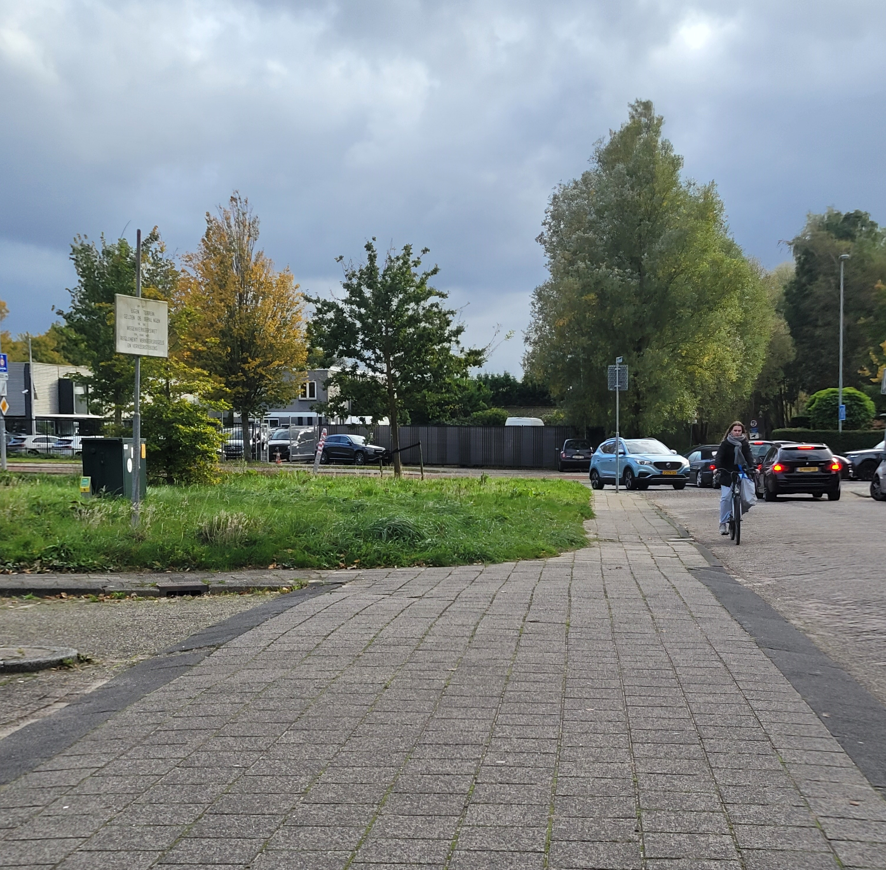

"The Importance of Physical Activity for Your Health"
Physical activity is one of the most important things you can do for your health. Regular exercise helps
control your weight, boosts mental health, improves heart function, and reduces the risk of chronic diseases
like diabetes and hypertension. Whether it's walking, running, or strength training, staying active is key to
overall well-being.
Key Benefits of Staying Active:
Weight Management: Helps burn calories and build muscle.
Mental Health: Reduces stress, anxiety, and depression.
Heart Health: Strengthens the heart and improves circulation.
Energy Boost: Increases stamina and reduces fatigue. "The Importance of Physical Activity for Your Health"

The Importance of Physical Activity for Your Health
Engaging in regular physical activity is one of the most beneficial
steps you can take for your overall health and well-being. Exercise
not only helps you maintain a healthy weight but also enhances both
physical and mental health. Whether it's through simple activities like
walking or more intense forms like strength training or running, incorporating
movement into your daily routine is essential for keeping your body and mind
in balance. Physical activity promotes heart health, improves circulation, and
strengthens muscles, contributing to better endurance and reduced risks of chronic
diseases such as diabetes and hypertension.
One of the primary benefits of staying active is effective weight management.
Regular exercise helps you burn calories, build lean muscle, and improve your
metabolic rate, making it easier to maintain or achieve a healthy weight. This not
only improves your physical appearance but also reduces the risk of obesity-related
conditions such as heart disease and type 2 diabetes. Exercise, combined with a
healthy diet, is crucial for sustaining long-term weight loss or maintaining a
stable weight. Additionally, physical activity helps prevent muscle loss as you age,
ensuring you stay strong and functional.
"A body in motion stays in motion."
– Isaac Newton...
Beyond physical health, staying active also plays a pivotal role in supporting mental well-being. Exercise is known to reduce stress, anxiety, and symptoms of depression by releasing endorphins, also known as "feel-good" hormones. It also improves cognitive function and memory while boosting self-esteem and mood. Regular physical activity strengthens the heart and improves circulation, ensuring that oxygen and nutrients are effectively delivered to the tissues, promoting overall cardiovascular health. Additionally, exercise offers an energy boost, enhancing stamina, reducing fatigue, and helping you feel more energized throughout the day. By incorporating physical activity into your routine, you can improve both physical and mental health, leading to a more balanced and fulfilling life.